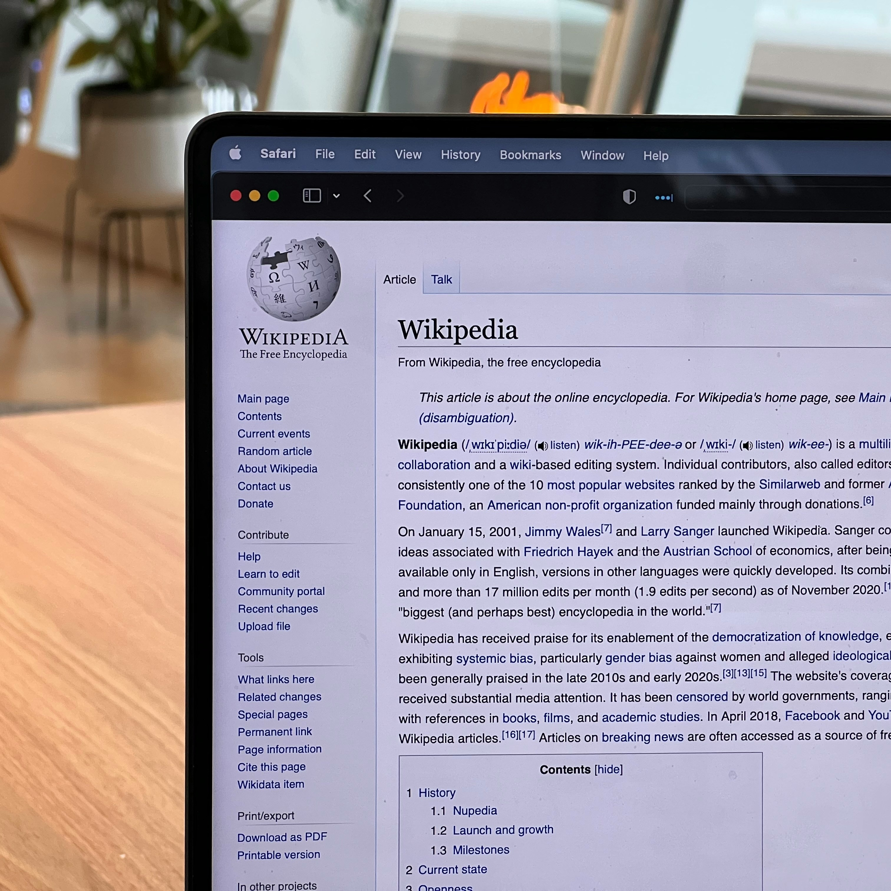
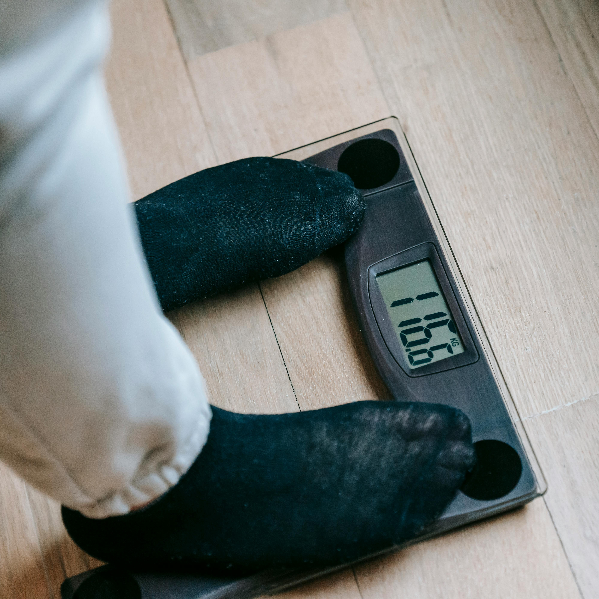

Python
I have developed a strong foundation in Python programming focused on data analysis and automation. My experience includes using Pandas for data manipulation, BeautifulSoup for web scraping, and Seaborn & Matplotlib for visualisation. I specialise in data cleaning, transforming raw datasets into structured formats for automating tasks to streamline workflows. Additionally, I leverage Python's data capabilities to uncover insights from complex datasets, driving data-driven decisions and optimising processes for the workplace.
Please find my Python projects beneath:
KEY SKILLS: DataFrame manipulation, Data Visualisation with Seaborn & Matplotlib, Correlation Analysis
The project showcases the use of Python for analysing and visualising global population data. By applying critical EDA techniques, it uncovers trends in population growth by year and continent, offering valuable insights for population studies and predictive analysis.
KEY SKILLS: Data Cleaning, Pandas, String Manipulation, Data Transformation
The project demonstrates Python's use for cleaning and transforming customer call data, focusing on phone number formatting, removing duplicates, and simplifying customer statuses to enhance data accuracy and analysis readiness.
KEY SKILLS: Web Scraping, Data Cleaning, Automation, CSV Handling, Pandas
The project demonstrates Python's ability to automate the extraction of Amazon product data, including prices and titles, and store this information in a CSV file for future analysis. The automation runs daily, ensuring up-to-date tracking of pricing trends.

KEY SKILLS: Web Scraping, BeautifulSoup, Data Cleaning, Pandas, CSV Handling
The project demonstrates scraping structured data from a Wikipedia page using Python’s BeautifulSoup, cleaning it effectively, and transforming it into a structured format CSV with Pandas for comprehensive analysis and reporting.
KEY SKILLS: File sorting, Data Organisation, Automation
The project above automates the organisation of various file types into structured folders, streamlining data preparation and management. This automation is essential for efficient data workflows in data analysis, ensuring that files are accessible for deeper insights.

KEY SKILLS: IFs, ELIFs, Conditional Statements, Arithmetic Calculations
The project above demonstrates techniques to evaluate and categorise BMI (Body Mass Index) results. It adjusts based on user input, providing personalised feedback, and reinforces fundamental Python concepts.